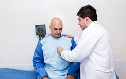

Nuestros Servicios
Nuestros procesos están apoyados en equipos automatizados para diagnóstico en las áreas de hematología, química sanguínea, entre otros, contamos con una amplia red de apoyo, con una oportunidad de entrega de resultado de 2 horas para exámenes de rutina.

Consulta médica realizada por profesionales especialistas en Medicina Interna, con las más altas cualidades humanas y científicas, quienes atienden integralmente los problemas de salud en pacientes adultos.
- Guía al paciente dirigiendo y coordinando la actuación frente a su enfermedad y coordinando al resto de especialistas necesarios para obtener un diagnóstico y tratamiento adecuado.
- Enfermedades de los órganos del adulto y la interrelación o influencia de la afección de un órgano a otro.
- Comprende el enfoque integral del paciente.
- El internista es el médico más capacitado para realizar un diagnóstico y un tratamiento acorde con la necesidad de los pacientes, especialmente cuando dicho paciente padece de múltiples enfermedades.
- Diabetes Mellitus.
- Hipertensión Arterial.
- Infección de Vías Urinarias.
- Trombosis Venosa Profunda.
- Alteración de líquidos y electrólitos.
- Delirium.

Pensando en apoyar a las diferentes empresas en la toma de exámenes para el bienestar de sus colaboradores y/o Clientes en Promoción y prevención, Salud Ocupacional, contamos con el servicio de toma de muestras que puede ser realizada por nuestro personal directamente en su sede.

El Servicio de Cardiología cuenta con personal altamente calificado, con amplia experiencia en Cardiología clínica y especialista en Hemodinamia, capacitados en la adecuada implementación de actividades de promoción, prevención y control de factores de riesgo cardiovascular, así como el manejo óptimo de las enfermedades cardiovasculares.
El Servicio de Nefrología está formado por personal altamente calificado para el diagnóstico tanto en la salud como en la enfermedad, incluyendo la prevención y tratamiento de las enfermedades que afectan al riñón y al tracto urinario, así como el manejo de las terapias de reemplazo renal agudo y crónico, hemodiálisis, diálisis peritoneal y trasplante renal.

En Mediservis del Tolima IPS S.A.S, Estamos comprometidos con el desarrollo científico contribuyendo a aportar conocimiento que contribuya a mejorar la calidad de vida de la comunidad en general, es por esto que estamos certificados en Buenas Prácticas Clínicas por parte del INVIMA (Res.2016041517 de 2016); hemos desarrollado estudios clínicos de intervención con medicamentos y estudios observacionales. Estos estudios le ofrecen a los pacientes la posibilidad de acceder a tratamientos innovadores que pueden ser de particular importancia en situaciones en las cuales se han agotado todas las alternativas terapéuticas. Además, sus resultados son una fuente de conocimiento científico que podría ayudar a otros pacientes y médicos en similares circunstancias clínicas. en diferentes aéreas terapéuticas como: Medicina General, Oncología, Cardiología, Medicina interna, Nefrología, Reumatología, Gastroenterología, Neumología, Neumología Pediátrica, Pediatría y Vacunación.
Disponemos de un software de informática médica propio, GeminisData. En el que gestionamos toda la información del Centro de Investigación, este además permite realizar monitoreo remoto por parte de nuestros patrocinadores y CRO cumpliendo con los requerimientos CRF21-11.
El comité de ética de Mediservis del Tolima IPS S.A.S, es una organización privada, multidisciplinaria, el cual tiene como misión asegurar el respeto a la dignidad, los derechos, el bienestar y la seguridad de todos los participantes de investigación, lo cual se logra mediante un proceso competente, oportuno e independiente, que incluye la revisión, aprobación y supervisión constante de los proyectos de investigación en humanos, garantizando su desarrollo de acuerdo a los principios éticos y normatividad. Realiza seguimiento periódico a los estudios aprobados y en desarrollo, a partir de principios éticos, legales y metodológicos idóneos, de manera que la investigación que tengan un impacto positivo a nivel científico y social. Todos los estudios que se van a realizar en la Institución deben ser evaluados y aprobados por el Comité de Ética en Investigación de la Clínica. Los documentos iniciales requeridos para sometimiento y aprobación por el Comité de Ética son:
- Protocolo.
- Manual del Investigador.
- Consentimiento informado.
- Material para pacientes.
- Certificado de la póliza de responsabilidad civil.
- Presupuesto del Estudio.
- CD con los documentos anteriormente listados.
Si necesita comunicarse con nosotros escribanos al correo:
comitedeetica@mediservisdeltolima.comNuestro Servicio Farmacéutico Evalúa los Proveedores valorados por la Clínica con criterios técnicos/administrativos; Aseguramos y controlamos la calidad de los medicamentos y dispositivos médicos en la selección, compra, recepción, almacenamiento y distribución de los mismos.
Realiza la distribución de medicamentos y dispositivos médicos para la atención de los pacientes; contamos con infraestructura y sistemas de almacenamiento adecuados, para conservar la estabilidad de los medicamentos y la integridad de los dispositivos médicos.
Contamos con programa de farmacovigilacia, tecnovigilancia y seguimiento a pacientes.